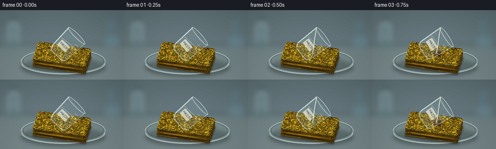
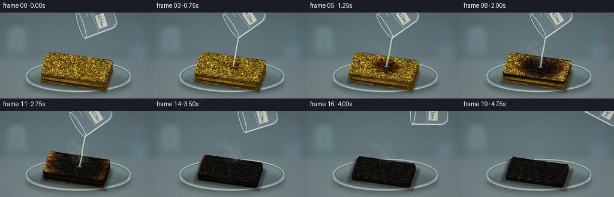
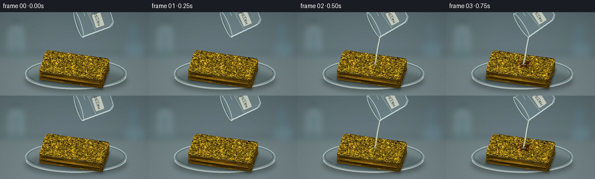
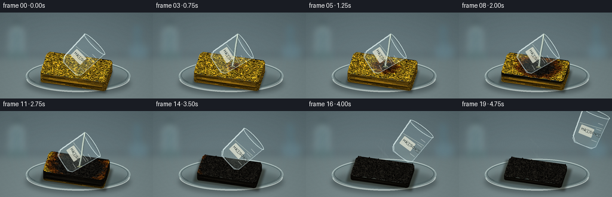

CODING AGENTS AS PIXEL WORLD MODELS
traex/GPT-6.1-Sol · phygen_155
点击播放 · 原生 RGB 像素
逐轮保存的候选
回放视频、检查图与代码变化。
每份候选均可单独播放。实际图片检查记录在下方工具轨迹中。
候选 01播放与检查图
点击播放 · 原生 RGB 像素


展开代码变化
--- 上一保存版本
+++ 本次保存版本
@@ -0,0 +1,304 @@
+from pathlib import Path
+import math
+import numpy as np
+from PIL import Image, ImageDraw, ImageFilter, ImageFont
+import cv2
+import artifact_io
+
+ROOT = Path(__file__).resolve().parent
+W,H,S=256,144,3
+WW,HH=W*S,H*S
+rng=np.random.default_rng(155)
+
+def smooth_noise(h,w,grid,seed):
+ r=np.random.default_rng(seed).random((grid,grid)).astype(np.float32)
+ return cv2.resize(r,(w,h),interpolation=cv2.INTER_CUBIC)
+
+# Stable, multi-scale open-cell sponge texture. Shaded recessed pores, not speckles.
+def foam_texture(w,h,seed):
+ r=np.random.default_rng(seed)
+ a=Image.new('L',(w,h),166);d=ImageDraw.Draw(a)
+ for i in range(int(w*h/105)):
+ x,y=r.uniform(0,w),r.uniform(0,h)
+ rr=r.uniform(1.2,9.0) if r.random()<.8 else r.uniform(9,17)
+ rx,ry=rr*r.uniform(.65,1.35),rr*r.uniform(.55,1.15)
+ d.ellipse((x-rx-1,y-ry-1,x+rx+1,y+ry+2),fill=int(r.uniform(175,215)))
+ d.ellipse((x-rx,y-ry,x+rx,y+ry),fill=int(r.uniform(30,85)))
+ d.ellipse((x-rx*.77,y-ry*.9,x+rx*.75,y+ry*.55),fill=int(r.uniform(15,54)))
+ d.arc((x-rx,y-ry,x+rx,y+ry),10,150,fill=int(r.uniform(115,160)),width=max(1,int(rr*.15)))
+ a=np.asarray(a).astype(np.float32)/166
+ a=a*(.85+.28*smooth_noise(h,w,20,seed+1))
+ a+=r.normal(0,.025,(h,w))
+ return np.clip(a,.08,1.3)
+TW,TH=900,500
+texture=foam_texture(TW,TH,12)
+side_texture=foam_texture(1000,320,18)
+noise=smooth_noise(TH,TW,20,44)
+fine=smooth_noise(TH,TW,70,45)
+TY,TX=np.mgrid[-.88:.88:complex(TH),-1.75:1.75:complex(TW)]
+
+# Projection for a stationary tabletop macro shot.
+def project(p):
+ p=np.asarray(p)
+ x,y,z=p[...,0],p[...,1],p[...,2]
+ return np.stack([(128+32*(.977*x+.215*y))*S,
+ (108+32*(.14*x-.636*y-.758*z))*S,
+ -.163*x+.725*y-.67*z],axis=-1)
+
+def poly(d,pts,fill,width=1):
+ d.polygon([(x*S,y*S) for x,y in pts],fill=fill)
+
+def make_bg():
+ yy,xx=np.mgrid[0:HH,0:WW]
+ sky=np.zeros((HH,WW,3),np.float32)
+ for c,base in enumerate([87,105,110]):
+ sky[:,:,c]=base + 20*yy/HH + 7*np.exp(-((xx-WW*.38)/(WW*.55))**2)
+ sky[yy>HH*.54] += np.array([9,8,5])
+ back=Image.fromarray(np.uint8(np.clip(sky,0,255)))
+ d=ImageDraw.Draw(back)
+ d.rectangle([0,69*S,WW,72*S],fill=(85,101,105))
+ # Out-of-focus laboratory glass silhouettes at the edges of the bench.
+ d.rounded_rectangle([16*S,27*S,39*S,73*S],radius=4*S,fill=(106,131,137),outline=(154,175,178),width=2*S)
+ d.rectangle([24*S,17*S,32*S,29*S],fill=(123,145,147))
+ d.rectangle([23*S,16*S,33*S,20*S],fill=(59,78,83))
+ d.ellipse([9*S,65*S,47*S,78*S],fill=(96,121,124))
+ d.rectangle([224*S,21*S,235*S,70*S],fill=(92,119,128))
+ d.ellipse([215*S,53*S,248*S,77*S],fill=(101,128,137))
+ back=back.filter(ImageFilter.GaussianBlur(5*S))
+ a=np.array(back).astype(float)
+ grain=np.random.default_rng(71).normal(0,.6,(HH,WW,1))
+ return Image.fromarray(np.uint8(np.clip(a+grain,0,255)))
+BG=make_bg()
+
+def dish(im):
+ shadow=Image.new('RGBA',(WW,HH));d=ImageDraw.Draw(shadow)
+ d.ellipse([43*S,99*S,218*S,138*S],fill=(20,28,29,90))
+ im.alpha_composite(shadow.filter(ImageFilter.GaussianBlur(4*S)))
+ l=Image.new('RGBA',(WW,HH));d=ImageDraw.Draw(l)
+ d.ellipse([43*S,80*S,218*S,132*S],fill=(139,164,161,37),outline=(189,213,210,125),width=2*S)
+ d.ellipse([47*S,82*S,214*S,128*S],outline=(36,59,61,130),width=S)
+ d.arc([44*S,80*S,217*S,130*S],180,348,fill=(223,237,230,170),width=S)
+ d.arc([44*S,88*S,217*S,133*S],0,178,fill=(225,236,231,170),width=2*S)
+ d.arc([48*S,84*S,213*S,128*S],18,150,fill=(76,106,109,100),width=S)
+ im.alpha_composite(l)
+
+# Rounded plan perimeter.
+per=[]
+for cx,cy,start in [(1.58,.71,0),(-1.58,.71,90),(-1.58,-.71,180),(1.58,-.71,270)]:
+ for ang in np.linspace(start,start+90,18,endpoint=False):
+ # traversed counterclockwise starting at right back corner
+ a=np.deg2rad(ang);per.append((cx+.17*np.cos(a),cy+.17*np.sin(a)))
+per=np.array(per)
+
+def decay_progress(frame):
+ return np.clip((frame-2)/15,0,1)
+
+def top_height(x,y,p):
+ base=.69+.025*np.sin(x*12+y*8)+.014*np.sin(x*31-y*13)
+ dist=np.sqrt(((x-.15)*.94)**2+((y-.07)*1.2)**2)
+ region=np.clip((p*2.7-dist+.16)/.4,0,1)
+ rough=.06*(np.sin(x*19+y*23)*np.sin(x*29-y*16))
+ return base+region*(.10*np.sin(p*np.pi)-.35*p+rough*p)
+
+def top_colors(p):
+ dist=np.sqrt(((TX-.15)*.94)**2+((TY-.07)*1.2)**2)
+ warped=dist+(noise-.5)*.34+(fine-.5)*.08
+ reach=p*2.75
+ browning=np.clip((reach-warped+.21)/.23,0,1) if p>0 else np.zeros_like(TX)
+ black=np.clip((reach-warped-.09)/.35,0,1) if p>0 else np.zeros_like(TX)
+ yellow=np.array([235,181,37]);brown=np.array([126,62,15]);char=np.array([31,29,24])
+ col=yellow[None,None,:]*(1-browning[...,None])+brown*browning[...,None]
+ col=col*(1-black[...,None])+char*black[...,None]
+ # Charred, shrunken pore walls stay recognizably open-cell.
+ sh=texture[...,None]
+ col=col*sh
+ col+=black[...,None]*np.maximum(sh-.7,0)*9
+ return np.uint8(np.clip(col,0,255))
+
+def side_colors(p):
+ hh,ww=side_texture.shape
+ uu=np.linspace(0,1,ww)[None,:];v=np.linspace(0,1,hh)[:,None]
+ # Heat travels down the outer face after the top first reacts.
+ f=np.clip((p*2.1-.38-v*.72-np.abs(uu-.5)*.48)/.25,0,1)
+ yellow=np.array([212,153,29]);char=np.array([30,27,20])
+ col=(yellow*(1-f[...,None])+char*f[...,None])*side_texture[...,None]
+ return np.uint8(np.clip(col,0,255))
+
+# Tiny software triangle renderer; all geometry and shading are generated here.
+def triangle(buf,zb,verts,uv,tex,light):
+ x0=max(int(np.floor(verts[:,0].min())),0);x1=min(int(np.ceil(verts[:,0].max()))+1,WW)
+ y0=max(int(np.floor(verts[:,1].min())),0);y1=min(int(np.ceil(verts[:,1].max()))+1,HH)
+ if x1<=x0 or y1<=y0:return
+ a,b,c=verts
+ den=(b[1]-c[1])*(a[0]-c[0])+(c[0]-b[0])*(a[1]-c[1])
+ if abs(den)<1e-5:return
+ yy,xx=np.mgrid[y0:y1,x0:x1];xx=xx+.5;yy=yy+.5
+ u=((b[1]-c[1])*(xx-c[0])+(c[0]-b[0])*(yy-c[1]))/den
+ v=((c[1]-a[1])*(xx-c[0])+(a[0]-c[0])*(yy-c[1]))/den
+ q=1-u-v
+ z=u*a[2]+v*b[2]+q*c[2]
+ mask=(u>=-.001)&(v>=-.001)&(q>=-.001)&(z<zb[y0:y1,x0:x1])
+ if not mask.any():return
+ tx=u*uv[0,0]+v*uv[1,0]+q*uv[2,0]
+ ty=u*uv[0,1]+v*uv[1,1]+q*uv[2,1]
+ tx=np.clip((tx*(tex.shape[1]-1)).astype(int),0,tex.shape[1]-1)
+ ty=np.clip((ty*(tex.shape[0]-1)).astype(int),0,tex.shape[0]-1)
+ colors=np.clip(tex[ty,tx]*light,0,255).astype(np.uint8)
+ buf[y0:y1,x0:x1][mask]=colors[mask]
+ zb[y0:y1,x0:x1][mask]=z[mask]
+
+def draw_sponge(im,frame):
+ p=decay_progress(frame)
+ toptex=top_colors(p);stex=side_colors(p)
+ buf=np.array(im.convert('RGB'));zb=np.ones((HH,WW))*1e6
+ shrink=1-.12*p
+ nx,ny=43,25
+ xs=np.linspace(-1.75,1.75,nx);ys=np.linspace(-.88,.88,ny)
+ vertices=[];uvs=[]
+ for j,y in enumerate(ys):
+ for i,x in enumerate(xs):
+ xx=x
+ # Rounded rectangle corners and small irregular foam outline.
+ edge=max(0,(abs(y)-.71)/.17)
+ limit=1.58+.17*np.sqrt(max(0,1-edge*edge))
+ xx=x/1.75*limit
+ xx+=.007*np.sin(y*41+x*30)
+ vertices.append((xx*shrink,y*shrink,top_height(xx,y,p)))
+ uvs.append(((xx+1.75)/3.5,(y+.88)/1.76))
+ verts=project(vertices);uvs=np.array(uvs)
+ for j in range(ny-1):
+ for i in range(nx-1):
+ a=j*nx+i;b=a+1;c=a+nx;d=c+1
+ for ids in [(a,b,c),(b,d,c)]:
+ ids=list(ids)
+ # broad soft upper-left light; surface bump gives subtle tonal changes
+ pp=np.array(vertices)[ids]
+ norm=np.cross(pp[1]-pp[0],pp[2]-pp[0]);norm=norm/(np.linalg.norm(norm)+1e-8)
+ light=.9+.13*abs(np.dot(norm,[-.35,-.45,.82]))
+ triangle(buf,zb,verts[ids],uvs[ids],toptex,light)
+ # Full wall mesh follows crater rim, keeping the foam a volume.
+ N=len(per);nz=10
+ vv=[];uu=[]
+ for k in range(nz):
+ h=k/(nz-1)
+ for i,(x,y) in enumerate(per):
+ rough=.009*np.sin(i*4.2+k*2)
+ z=.06+h*(top_height(x,y,p)-.06)
+ vv.append(((x+rough)*shrink,(y+rough)*shrink,z))
+ uu.append((i/(N-1),1-h))
+ pp=project(vv);uu=np.array(uu)
+ for k in range(nz-1):
+ for i in range(N):
+ ii=(i+1)%N
+ a=k*N+i;b=k*N+ii;c=(k+1)*N+i;d=(k+1)*N+ii
+ side_light=.74 if per[i,1]<0 else .60
+ if per[i,0]>1.5:side_light=.63
+ for ids in [(a,b,c),(b,d,c)]:
+ ids=list(ids);triangle(buf,zb,pp[ids],uu[ids],stex,side_light)
+ return Image.fromarray(buf).convert('RGBA')
+
+FONT='/usr/share/fonts/truetype/dejavu/DejaVuSans.ttf'
+
+def vessel(frame):
+ # A glass beaker enters from the upper right, tips toward the sponge, then withdraws.
+ l=Image.new('RGBA',(105*S,85*S));d=ImageDraw.Draw(l)
+ body=[(30,8),(77,8),(74,61),(68,67),(38,67),(32,61)]
+ poly(d,body,(169,202,206,39))
+ d.line([(x*S,y*S) for x,y in body[1:]],fill=(211,234,236,155),width=S)
+ d.line([(30*S,8*S),(32*S,58*S),(38*S,64*S)],fill=(231,247,246,200),width=2*S)
+ # Clear viscous liquid, with a horizontal meniscus once the vessel is tilted.
+ poly(d,[(33,33),(75,29),(73,60),(67,64),(38,64),(34,59)],(187,212,206,48))
+ d.line([(34*S,33*S),(73*S,29*S)],fill=(231,244,229,150),width=S)
+ d.ellipse([29*S,4*S,78*S,13*S],outline=(224,244,242,215),width=S)
+ d.arc([34*S,59*S,72*S,67*S],0,180,fill=(220,237,236,160),width=S)
+ for y in [23,33,43,53]:
+ d.line([(63*S,y*S),(72*S,y*S)],fill=(230,241,237,130),width=S)
+ # Modest reagent identification on the vessel, no added scene caption.
+ d.rounded_rectangle([38*S,35*S,61*S,50*S],radius=S,fill=(225,228,211,210))
+ font=ImageFont.truetype(FONT,6*S)
+ d.text((40*S,38*S),'HâSOâ',font=font,fill=(43,54,52,240))
+ angle=45+min(frame,3)*4
+ if frame>=12: angle=57-max(0,frame-12)*5
+ out=l.rotate(-angle,resample=Image.Resampling.BICUBIC,expand=True)
+ # Anchor the tilted lip near x140,y37. Body extends to the upper right.
+ # PIL clockwise transformed left lip from original (30,8).
+ a=np.deg2rad(angle);cx,cy=l.width/2,l.height/2
+ lipx=(30*S-cx)*np.cos(a)-(8*S-cy)*np.sin(a)+out.width/2
+ lipy=(30*S-cx)*np.sin(a)+(8*S-cy)*np.cos(a)+out.height/2
+ withdraw=max(0,frame-13)
+ xpos=142+withdraw*11; ypos=36-withdraw*7
+ return out,(int(xpos*S-lipx),int(ypos*S-lipy)),(xpos,ypos)
+
+def stream(im,frame,lip):
+ if frame<2 or frame>12:return
+ lay=Image.new('RGBA',(WW,HH));d=ImageDraw.Draw(lay)
+ bottom=project([[.15,.07,top_height(.15,.07,decay_progress(frame))]])[0,:2]/S
+ x0,y0=lip;xe,ye=bottom
+ # Accelerating narrow cohesive stream under gravity, with transparent highlights.
+ pts=[]
+ for u in np.linspace(0,1,65):
+ x=x0+(xe-x0)*u + .6*np.sin(u*8+frame*.8)*u
+ y=y0+(ye-y0)*u
+ pts.append((x*S,y*S))
+ d.line(pts,fill=(66,83,73,115),width=4*S)
+ d.line([(x-S*.6,y) for x,y in pts],fill=(227,241,220,175),width=2*S)
+ d.line([(x+S*.7,y) for x,y in pts],fill=(248,255,243,170),width=max(1,S//2))
+ # Small wet highlight around the impact, and a few tiny droplets.
+ d.ellipse([(xe-4)*S,(ye-1.2)*S,(xe+4)*S,(ye+1.3)*S],outline=(218,222,158,140),width=S)
+ for k in range(3):
+ off=math.sin(frame*2+k*3)
+ x=xe+off*(3+k*1.4);y=ye-2-abs(math.cos(frame+k))*4
+ d.ellipse([(x-.45)*S,(y-.6)*S,(x+.45)*S,(y+.6)*S],fill=(227,240,218,130))
+ im.alpha_composite(lay)
+
+def vapors(im,frame):
+ if frame<4:return
+ intensity=min(1,(frame-3)/5)*max(.20,1-max(0,frame-12)*.085)
+ smoke=Image.new('RGBA',(WW,HH));d=ImageDraw.Draw(smoke)
+ # Overlapping soft moving wisps; buoyant vapor widens and curls as it rises.
+ for j in range(6):
+ base_x=124+j*5
+ for k in range(35):
+ u=k/34
+ phase=frame*.7+j*1.6
+ x=base_x-12*u+7*np.sin(u*7+phase)*u
+ y=88-u*(42+5*np.sin(j))
+ rad=(1.1+u*4.5)*(1+.18*np.sin(phase+u*14))
+ alpha=int(intensity*(1-u)**.7*(4+3*np.sin(j+u*9)**2))
+ d.ellipse([(x-rad)*S,(y-rad*1.35)*S,(x+rad)*S,(y+rad*1.35)*S],fill=(228,233,224,alpha))
+ smoke=smoke.filter(ImageFilter.GaussianBlur(1.3*S))
+ im.alpha_composite(smoke)
+ # Narrow silky streamers retain definition within the diffuse vapor cloud.
+ wisps=Image.new('RGBA',(WW,HH));d=ImageDraw.Draw(wisps)
+ for j in range(4):
+ pts=[]
+ for u in np.linspace(0,1,60):
+ x=132+j*3-15*u+5*np.sin(u*9+frame*.65+j)*u
+ y=86-40*u
+ pts.append((x*S,y*S))
+ d.line(pts,fill=(219,225,214,int(18*intensity)),width=2*S)
+ im.alpha_composite(wisps.filter(ImageFilter.GaussianBlur(.8*S)))
+
+frames=[]
+for frame in range(20):
+ im=BG.convert('RGBA')
+ dish(im)
+ # Contact shadow under the rounded foam block.
+ sh=Image.new('RGBA',(WW,HH));d=ImageDraw.Draw(sh)
+ pts=project([[-1.75,-.9,0],[1.75,-.9,0],[1.75,.9,0],[-1.75,.9,0]])
+ d.polygon([tuple(p[:2]) for p in pts],fill=(31,32,22,145))
+ im.alpha_composite(sh.filter(ImageFilter.GaussianBlur(1.8*S)))
+ im=draw_sponge(im,frame)
+ b,pos,lip=vessel(frame)
+ im.alpha_composite(b,dest=pos)
+ stream(im,frame,lip)
+ vapors(im,frame)
+ # Restrained photographic vignette, with no text overlay.
+ a=np.array(im.convert('RGB')).astype(float)
+ yy,xx=np.mgrid[0:HH,0:WW]
+ vig=1-.12*((xx-WW*.49)/(WW*.75))**2-.10*((yy-HH*.55)/(HH*.8))**2
+ a=np.clip(a*vig[...,None],0,255).astype(np.uint8)
+ image=Image.fromarray(a).resize((W,H),Image.Resampling.LANCZOS)
+ frames.append(np.array(image))
+artifact_io.save(np.stack(frames),ROOT)
+print('Saved 20 RGB frames and playback artifacts.')
候选 02播放与检查图
点击播放 · 原生 RGB 像素


展开代码变化
--- 上一保存版本
+++ 本次保存版本
@@ -217,8 +217,8 @@
d.rounded_rectangle([38*S,35*S,61*S,50*S],radius=S,fill=(225,228,211,210))
font=ImageFont.truetype(FONT,6*S)
d.text((40*S,38*S),'HâSOâ',font=font,fill=(43,54,52,240))
- angle=45+min(frame,3)*4
- if frame>=12: angle=57-max(0,frame-12)*5
+ angle=-108-min(frame,3)*5
+ if frame>=12: angle=-123+max(0,frame-12)*9
out=l.rotate(-angle,resample=Image.Resampling.BICUBIC,expand=True)
# Anchor the tilted lip near x140,y37. Body extends to the upper right.
# PIL clockwise transformed left lip from original (30,8).
@@ -226,7 +226,7 @@
lipx=(30*S-cx)*np.cos(a)-(8*S-cy)*np.sin(a)+out.width/2
lipy=(30*S-cx)*np.sin(a)+(8*S-cy)*np.cos(a)+out.height/2
withdraw=max(0,frame-13)
- xpos=142+withdraw*11; ypos=36-withdraw*7
+ xpos=142+withdraw*11; ypos=43-withdraw*7
return out,(int(xpos*S-lipx),int(ypos*S-lipy)),(xpos,ypos)
def stream(im,frame,lip):
@@ -264,7 +264,7 @@
x=base_x-12*u+7*np.sin(u*7+phase)*u
y=88-u*(42+5*np.sin(j))
rad=(1.1+u*4.5)*(1+.18*np.sin(phase+u*14))
- alpha=int(intensity*(1-u)**.7*(4+3*np.sin(j+u*9)**2))
+ alpha=int(intensity*(1-u)**.7*(24+16*np.sin(j+u*9)**2))
d.ellipse([(x-rad)*S,(y-rad*1.35)*S,(x+rad)*S,(y+rad*1.35)*S],fill=(228,233,224,alpha))
smoke=smoke.filter(ImageFilter.GaussianBlur(1.3*S))
im.alpha_composite(smoke)
@@ -276,7 +276,7 @@
x=132+j*3-15*u+5*np.sin(u*9+frame*.65+j)*u
y=86-40*u
pts.append((x*S,y*S))
- d.line(pts,fill=(219,225,214,int(18*intensity)),width=2*S)
+ d.line(pts,fill=(219,225,214,int(40*intensity)),width=2*S)
im.alpha_composite(wisps.filter(ImageFilter.GaussianBlur(.8*S)))
frames=[]
可观测工具轨迹
实际执行的命令与返回图片。
命令 1exit 0
/bin/bash -lc "ls -la && cat prompt.txt && printf '\\n--- RULES ---\\n' && cat GENERATION_RULES.md && printf '\\n--- SPEC ---\\n' && cat task_spec.json"
命令 2exit 0
/bin/bash -lc "cat artifact_io.py && python - <<'PY' import importlib.util for p in ['numpy','PIL','scipy','cv2']: print(p, bool(importlib.util.find_spec(p))) PY"
命令 3exit 0
/bin/bash -lc "cat > generate.py <<'PY'
from pathlib import Path
import math
import numpy as np
from PIL import Image, ImageDraw, ImageFilter, ImageFont
import cv2
import artifact_io
ROOT = Path(__file__).resolve().parent
W,H,S=256,144,3
WW,HH=W*S,H*S
rng=np.random.default_rng(155)
def smooth_noise(h,w,grid,seed):
r=np.random.default_rng(seed).random((grid,grid)).astype(np.float32)
return cv2.resize(r,(w,h),interpolation=cv2.INTER_CUBIC)
# Stable, multi-scale open-cell sponge texture. Shaded recessed pores, not speckles.
def foam_texture(w,h,seed):
r=np.random.default_rng(seed)
a=Image.new('L',(w,h),166);d=ImageDraw.Draw(a)
for i in range(int(w*h/105)):
x,y=r.uniform(0,w),r.uniform(0,h)
rr=r.uniform(1.2,9.0) if r.random()<.8 else r.uniform(9,17)
rx,ry=rr*r.uniform(.65,1.35),rr*r.uniform(.55,1.15)
d.ellipse((x-rx-1,y-ry-1,x+rx+1,y+ry+2),fill=int(r.uniform(175,215)))
d.ellipse((x-rx,y-ry,x+rx,y+ry),fill=int(r.uniform(30,85)))
d.ellipse((x-rx*.77,y-ry*.9,x+rx*.75,y+ry*.55),fill=int(r.uniform(15,54)))
d.arc((x-rx,y-ry,x+rx,y+ry),10,150,fill=int(r.uniform(115,160)),width=max(1,int(rr*.15)))
a=np.asarray(a).astype(np.float32)/166
a=a*(.85+.28*smooth_noise(h,w,20,seed+1))
a+=r.normal(0,.025,(h,w))
return np.clip(a,.08,1.3)
TW,TH=900,500
texture=foam_texture(TW,TH,12)
side_texture=foam_texture(1000,320,18)
noise=smooth_noise(TH,TW,20,44)
fine=smooth_noise(TH,TW,70,45)
TY,TX=np.mgrid[-.88:.88:complex(TH),-1.75:1.75:complex(TW)]
# Projection for a stationary tabletop macro shot.
def project(p):
p=np.asarray(p)
x,y,z=p[...,0],p[...,1],p[...,2]
return np.stack([(128+32*(.977*x+.215*y))*S,
(108+32*(.14*x-.636*y-.758*z))*S,
-.163*x+.725*y-.67*z],axis=-1)
def poly(d,pts,fill,width=1):
d.polygon([(x*S,y*S) for x,y in pts],fill=fill)
def make_bg():
yy,xx=np.mgrid[0:HH,0:WW]
sky=np.zeros((HH,WW,3),np.float32)
for c,base in enumerate([87,105,110]):
sky[:,:,c]=base + 20*yy/HH + 7*np.exp(-((xx-WW*.38)/(WW*.55))**2)
sky[yy>HH*.54] += np.array([9,8,5])
back=Image.fromarray(np.uint8(np.clip(sky,0,255)))
d=ImageDraw.Draw(back)
d.rectangle([0,69*S,WW,72*S],fill=(85,101,105))
# Out-of-focus laboratory glass silhouettes at the edges of the bench.
d.rounded_rectangle([16*S,27*S,39*S,73*S],radius=4*S,fill=(106,131,137),outline=(154,175,178),width=2*S)
d.rectangle([24*S,17*S,32*S,29*S],fill=(123,145,147))
d.rectangle([23*S,16*S,33*S,20*S],fill=(59,78,83))
d.ellipse([9*S,65*S,47*S,78*S],fill=(96,121,124))
d.rectangle([224*S,21*S,235*S,70*S],fill=(92,119,128))
d.ellipse([215*S,53*S,248*S,77*S],fill=(101,128,137))
back=back.filter(ImageFilter.GaussianBlur(5*S))
a=np.array(back).astype(float)
grain=np.random.default_rng(71).normal(0,.6,(HH,WW,1))
return Image.fromarray(np.uint8(np.clip(a+grain,0,255)))
BG=make_bg()
def dish(im):
shadow=Image.new('RGBA',(WW,HH));d=ImageDraw.Draw(shadow)
d.ellipse([43*S,99*S,218*S,138*S],fill=(20,28,29,90))
im.alpha_composite(shadow.filter(ImageFilter.GaussianBlur(4*S)))
l=Image.new('RGBA',(WW,HH));d=ImageDraw.Draw(l)
d.ellipse([43*S,80*S,218*S,132*S],fill=(139,164,161,37),outline=(189,213,210,125),width=2*S)
d.ellipse([47*S,82*S,214*S,128*S],outline=(36,59,61,130),width=S)
d.arc([44*S,80*S,217*S,130*S],180,348,fill=(223,237,230,170),width=S)
d.arc([44*S,88*S,217*S,133*S],0,178,fill=(225,236,231,170),width=2*S)
d.arc([48*S,84*S,213*S,128*S],18,150,fill=(76,106,109,100),width=S)
im.alpha_composite(l)
# Rounded plan perimeter.
per=[]
for cx,cy,start in [(1.58,.71,0),(-1.58,.71,90),(-1.58,-.71,180),(1.58,-.71,270)]:
for ang in np.linspace(start,start+90,18,endpoint=False):
# traversed counterclockwise starting at right back corner
a=np.deg2rad(ang);per.append((cx+.17*np.cos(a),cy+.17*np.sin(a)))
per=np.array(per)
def decay_progress(frame):
return np.clip((frame-2)/15,0,1)
def top_height(x,y,p):
base=.69+.025*np.sin(x*12+y*8)+.014*np.sin(x*31-y*13)
dist=np.sqrt(((x-.15)*.94)**2+((y-.07)*1.2)**2)
region=np.clip((p*2.7-dist+.16)/.4,0,1)
rough=.06*(np.sin(x*19+y*23)*np.sin(x*29-y*16))
return base+region*(.10*np.sin(p*np.pi)-.35*p+rough*p)
def top_colors(p):
dist=np.sqrt(((TX-.15)*.94)**2+((TY-.07)*1.2)**2)
warped=dist+(noise-.5)*.34+(fine-.5)*.08
reach=p*2.75
browning=np.clip((reach-warped+.21)/.23,0,1) if p>0 else np.zeros_like(TX)
black=np.clip((reach-warped-.09)/.35,0,1) if p>0 else np.zeros_like(TX)
yellow=np.array([235,181,37]);brown=np.array([126,62,15]);char=np.array([31,29,24])
col=yellow[None,None,:]*(1-browning[...,None])+brown*browning[...,None]
col=col*(1-black[...,None])+char*black[...,None]
# Charred, shrunken pore walls stay recognizably open-cell.
sh=texture[...,None]
col=col*sh
col+=black[...,None]*np.maximum(sh-.7,0)*9
return np.uint8(np.clip(col,0,255))
def side_colors(p):
hh,ww=side_texture.shape
uu=np.linspace(0,1,ww)[None,:];v=np.linspace(0,1,hh)[:,None]
# Heat travels down the outer face after the top first reacts.
f=np.clip((p*2.1-.38-v*.72-np.abs(uu-.5)*.48)/.25,0,1)
yellow=np.array([212,153,29]);char=np.array([30,27,20])
col=(yellow*(1-f[...,None])+char*f[...,None])*side_texture[...,None]
return np.uint8(np.clip(col,0,255))
# Tiny software triangle renderer; all geometry and shading are generated here.
def triangle(buf,zb,verts,uv,tex,light):
x0=max(int(np.floor(verts[:,0].min())),0);x1=min(int(np.ceil(verts[:,0].max()))+1,WW)
y0=max(int(np.floor(verts[:,1].min())),0);y1=min(int(np.ceil(verts[:,1].max()))+1,HH)
if x1<=x0 or y1<=y0:return
a,b,c=verts
den=(b[1]-c[1])*(a[0]-c[0])+(c[0]-b[0])*(a[1]-c[1])
if abs(den)<1e-5:return
yy,xx=np.mgrid[y0:y1,x0:x1];xx=xx+.5;yy=yy+.5
u=((b[1]-c[1])*(xx-c[0])+(c[0]-b[0])*(yy-c[1]))/den
v=((c[1]-a[1])*(xx-c[0])+(a[0]-c[0])*(yy-c[1]))/den
q=1-u-v
z=u*a[2]+v*b[2]+q*c[2]
mask=(u>=-.001)&(v>=-.001)&(q>=-.001)&(z<zb[y0:y1,x0:x1])
if not mask.any():return
tx=u*uv[0,0]+v*uv[1,0]+q*uv[2,0]
ty=u*uv[0,1]+v*uv[1,1]+q*uv[2,1]
tx=np.clip((tx*(tex.shape[1]-1)).astype(int),0,tex.shape[1]-1)
ty=np.clip((ty*(tex.shape[0]-1)).astype(int),0,tex.shape[0]-1)
colors=np.clip(tex[ty,tx]*light,0,255).astype(np.uint8)
buf[y0:y1,x0:x1][mask]=colors[mask]
zb[y0:y1,x0:x1][mask]=z[mask]
def draw_sponge(im,frame):
p=decay_progress(frame)
toptex=top_colors(p);stex=side_colors(p)
buf=np.array(im.convert('RGB'));zb=np.ones((HH,WW))*1e6
shrink=1-.12*p
nx,ny=43,25
xs=np.linspace(-1.75,1.75,nx);ys=np.linspace(-.88,.88,ny)
vertices=[];uvs=[]
for j,y in enumerate(ys):
for i,x in enumerate(xs):
xx=x
# Rounded rectangle corners and small irregular foam outline.
edge=max(0,(abs(y)-.71)/.17)
limit=1.58+.17*np.sqrt(max(0,1-edge*edge))
xx=x/1.75*limit
xx+=.007*np.sin(y*41+x*30)
vertices.append((xx*shrink,y*shrink,top_height(xx,y,p)))
uvs.append(((xx+1.75)/3.5,(y+.88)/1.76))
verts=project(vertices);uvs=np.array(uvs)
for j in range(ny-1):
for i in range(nx-1):
a=j*nx+i;b=a+1;c=a+nx;d=c+1
for ids in [(a,b,c),(b,d,c)]:
ids=list(ids)
# broad soft upper-left light; surface bump gives subtle tonal changes
pp=np.array(vertices)[ids]
norm=np.cross(pp[1]-pp[0],pp[2]-pp[0]);norm=norm/(np.linalg.norm(norm)+1e-8)
light=.9+.13*abs(np.dot(norm,[-.35,-.45,.82]))
triangle(buf,zb,verts[ids],uvs[ids],toptex,light)
# Full wall mesh follows crater rim, keeping the foam a volume.
N=len(per);nz=10
vv=[];uu=[]
for k in range(nz):
h=k/(nz-1)
for i,(x,y) in enumerate(per):
rough=.009*np.sin(i*4.2+k*2)
z=.06+h*(top_height(x,y,p)-.06)
vv.append(((x+rough)*shrink,(y+rough)*shrink,z))
uu.append((i/(N-1),1-h))
pp=project(vv);uu=np.array(uu)
for k in range(nz-1):
for i in range(N):
ii=(i+1)%N
a=k*N+i;b=k*N+ii;c=(k+1)*N+i;d=(k+1)*N+ii
side_light=.74 if per[i,1]<0 else .60
if per[i,0]>1.5:side_light=.63
for ids in [(a,b,c),(b,d,c)]:
ids=list(ids);triangle(buf,zb,pp[ids],uu[ids],stex,side_light)
return Image.fromarray(buf).convert('RGBA')
FONT='/usr/share/fonts/truetype/dejavu/DejaVuSans.ttf'
def vessel(frame):
# A glass beaker enters from the upper right, tips toward the sponge, then withdraws.
l=Image.new('RGBA',(105*S,85*S));d=ImageDraw.Draw(l)
body=[(30,8),(77,8),(74,61),(68,67),(38,67),(32,61)]
poly(d,body,(169,202,206,39))
d.line([(x*S,y*S) for x,y in body[1:]],fill=(211,234,236,155),width=S)
d.line([(30*S,8*S),(32*S,58*S),(38*S,64*S)],fill=(231,247,246,200),width=2*S)
# Clear viscous liquid, with a horizontal meniscus once the vessel is tilted.
poly(d,[(33,33),(75,29),(73,60),(67,64),(38,64),(34,59)],(187,212,206,48))
d.line([(34*S,33*S),(73*S,29*S)],fill=(231,244,229,150),width=S)
d.ellipse([29*S,4*S,78*S,13*S],outline=(224,244,242,215),width=S)
d.arc([34*S,59*S,72*S,67*S],0,180,fill=(220,237,236,160),width=S)
for y in [23,33,43,53]:
d.line([(63*S,y*S),(72*S,y*S)],fill=(230,241,237,130),width=S)
# Modest reagent identification on the vessel, no added scene caption.
d.rounded_rectangle([38*S,35*S,61*S,50*S],radius=S,fill=(225,228,211,210))
font=ImageFont.truetype(FONT,6*S)
d.text((40*S,38*S),'HâSOâ',font=font,fill=(43,54,52,240))
angle=45+min(frame,3)*4
if frame>=12: angle=57-max(0,frame-12)*5
out=l.rotate(-angle,resample=Image.Resampling.BICUBIC,expand=True)
# Anchor the tilted lip near x140,y37. Body extends to the upper right.
# PIL clockwise transformed left lip from original (30,8).
a=np.deg2rad(angle);cx,cy=l.width/2,l.height/2
lipx=(30*S-cx)*np.cos(a)-(8*S-cy)*np.sin(a)+out.width/2
lipy=(30*S-cx)*np.sin(a)+(8*S-cy)*np.cos(a)+out.height/2
withdraw=max(0,frame-13)
xpos=142+withdraw*11; ypos=36-withdraw*7
return out,(int(xpos*S-lipx),int(ypos*S-lipy)),(xpos,ypos)
def stream(im,frame,lip):
if frame<2 or frame>12:return
lay=Image.new('RGBA',(WW,HH));d=ImageDraw.Draw(lay)
bottom=project([[.15,.07,top_height(.15,.07,decay_progress(frame))]])[0,:2]/S
x0,y0=lip;xe,ye=bottom
# Accelerating narrow cohesive stream under gravity, with transparent highlights.
pts=[]
for u in np.linspace(0,1,65):
x=x0+(xe-x0)*u + .6*np.sin(u*8+frame*.8)*u
y=y0+(ye-y0)*u
pts.append((x*S,y*S))
d.line(pts,fill=(66,83,73,115),width=4*S)
d.line([(x-S*.6,y) for x,y in pts],fill=(227,241,220,175),width=2*S)
d.line([(x+S*.7,y) for x,y in pts],fill=(248,255,243,170),width=max(1,S//2))
# Small wet highlight around the impact, and a few tiny droplets.
d.ellipse([(xe-4)*S,(ye-1.2)*S,(xe+4)*S,(ye+1.3)*S],outline=(218,222,158,140),width=S)
for k in range(3):
off=math.sin(frame*2+k*3)
x=xe+off*(3+k*1.4);y=ye-2-abs(math.cos(frame+k))*4
d.ellipse([(x-.45)*S,(y-.6)*S,(x+.45)*S,(y+.6)*S],fill=(227,240,218,130))
im.alpha_composite(lay)
def vapors(im,frame):
if frame<4:return
intensity=min(1,(frame-3)/5)*max(.20,1-max(0,frame-12)*.085)
smoke=Image.new('RGBA',(WW,HH));d=ImageDraw.Draw(smoke)
# Overlapping soft moving wisps; buoyant vapor widens and curls as it rises.
for j in range(6):
base_x=124+j*5
for k in range(35):
u=k/34
phase=frame*.7+j*1.6
x=base_x-12*u+7*np.sin(u*7+phase)*u
y=88-u*(42+5*np.sin(j))
rad=(1.1+u*4.5)*(1+.18*np.sin(phase+u*14))
alpha=int(intensity*(1-u)**.7*(4+3*np.sin(j+u*9)**2))
d.ellipse([(x-rad)*S,(y-rad*1.35)*S,(x+rad)*S,(y+rad*1.35)*S],fill=(228,233,224,alpha))
smoke=smoke.filter(ImageFilter.GaussianBlur(1.3*S))
im.alpha_composite(smoke)
# Narrow silky streamers retain definition within the diffuse vapor cloud.
wisps=Image.new('RGBA',(WW,HH));d=ImageDraw.Draw(wisps)
for j in range(4):
pts=[]
for u in np.linspace(0,1,60):
x=132+j*3-15*u+5*np.sin(u*9+frame*.65+j)*u
y=86-40*u
pts.append((x*S,y*S))
d.line(pts,fill=(219,225,214,int(18*intensity)),width=2*S)
im.alpha_composite(wisps.filter(ImageFilter.GaussianBlur(.8*S)))
frames=[]
for frame in range(20):
im=BG.convert('RGBA')
dish(im)
# Contact shadow under the rounded foam block.
sh=Image.new('RGBA',(WW,HH));d=ImageDraw.Draw(sh)
pts=project([[-1.75,-.9,0],[1.75,-.9,0],[1.75,.9,0],[-1.75,.9,0]])
d.polygon([tuple(p[:2]) for p in pts],fill=(31,32,22,145))
im.alpha_composite(sh.filter(ImageFilter.GaussianBlur(1.8*S)))
im=draw_sponge(im,frame)
b,pos,lip=vessel(frame)
im.alpha_composite(b,dest=pos)
stream(im,frame,lip)
vapors(im,frame)
# Restrained photographic vignette, with no text overlay.
a=np.array(im.convert('RGB')).astype(float)
yy,xx=np.mgrid[0:HH,0:WW]
vig=1-.12*((xx-WW*.49)/(WW*.75))**2-.10*((yy-HH*.55)/(HH*.8))**2
a=np.clip(a*vig[...,None],0,255).astype(np.uint8)
image=Image.fromarray(a).resize((W,H),Image.Resampling.LANCZOS)
frames.append(np.array(image))
artifact_io.save(np.stack(frames),ROOT)
print('Saved 20 RGB frames and playback artifacts.')
PY
python generate.py"命令 4exit 0
/bin/bash -lc "python - <<'PY'
p='generate.py'
s=open(p).read().replace(\"'HâÂÂSOâÂÂ'\", \"'H2SO4'\")
s=s.replace('angle=45+min(frame,3)*4','angle=-108-min(frame,3)*5')
s=s.replace('if frame>=12: angle=57-max(0,frame-12)*5','if frame>=12: angle=-123+max(0,frame-12)*9')
s=s.replace('xpos=142+withdraw*11; ypos=36-withdraw*7','xpos=142+withdraw*11; ypos=43-withdraw*7')
s=s.replace('(4+3*np.sin(j+u*9)**2)', '(24+16*np.sin(j+u*9)**2)')
s=s.replace('int(18*intensity)', 'int(40*intensity)')
open(p,'w').write(s)
PY
python generate.py"命令 5exit 0
/bin/bash -lc "python - <<'PY'
from pathlib import Path
import numpy as np
from PIL import Image
p=Path('.')
a=np.load(p/'pixels.npz')['pixels']
assert a.shape==(144,256,20)
fs=sorted((p/'frames').glob('*.png'))
assert len(fs)==20
assert all(Image.open(f).size==(256,144) and Image.open(f).mode=='RGB' for f in fs)
assert (p/'index.html').exists() and (p/'generate.py').exists()
print('Validated: 20 RGB frames, 256x144, 4 fps; all required artifacts exist.')
PY"视觉工具实际返回图片 1

视觉工具实际返回图片 2

保存候选 2 份；完成命令 5 次；可验证图片返回 2 张。原始 API 响应与完整日志保留在本地。